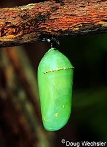
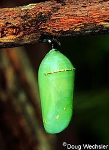
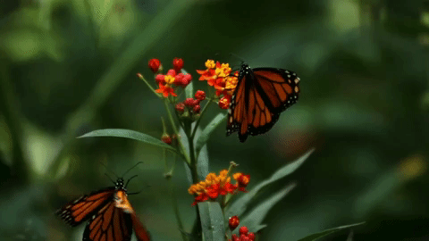

Metamorphosis
Lepidoptera is an order of insects that includes butterflies and moths, which go throgh a complete metamorphosis throughout their lives. This means there are four separate stages in the life cycle (egg, larva, pupa, and adult). Each stage looks completely different and serves a different purpose in the life of the insect.
Egg
A butterfly usually lays 200-500 eggs which vary in shape and size depending on the species. Most species hatch in four to five days, while others may take as long as three weeks. Eggs are laid on plants, which will then become the food for the hatching caterpillars.

Larva
The next stage is the larva. This is also called a caterpillar if the insect is a butterfly or a moth.
The job of the caterpillar is to eat and eat and eat. As the caterpillar grows it splits its skin and sheds it about 4 or 5 times. Food eaten at this time is stored and used later as an adult.
Caterpillars can grow 100 times their size during this stage. For example, a monarch butterfly egg is the size of a pinhead and the caterpillar that hatches from this tiny egg isn't much bigger. But it will grow up to 2 inches long in several weeks.
Pupa
When the caterpillar is full grown and stops eating, it becomes a pupa. The pupa of butterflies is also called a chrysalis.
Depending on the species, the pupa may suspended under a branch, hidden in leaves or buried underground. The pupa of many moths is protected inside a coccoon of silk.
This stage can last from a few weeks, a month or even longer. Some species have a pupal stage that lasts for two years.
It may look like nothing is going on but big changes are happening inside. Special cells that were present in the larva are now growing rapidly. They will become the legs, wings, eyes and other parts of the adult butterfly. Many of the original larva cells will provide energy for these growing adult cells.
 

Adult
The adult stage is what most people think of when they think of butterflies. At this stage, the wings are very soft and wet and the butterfly/moth must remain suspended while waiting up to two hours for its wings to dry. Once the wings are stretched and dried, the adult flies off to feed, find a mate and begin the cycle again.
Some species of adult butterflies get energy by feeding on nectar from flowers but many species don't feed at all. Some species of adult butterflies get energy by feeding on nectar from flowers but many species don't feed at all.
